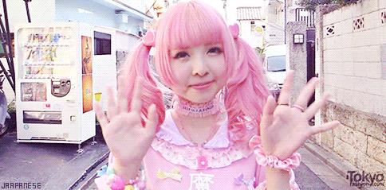

Nuevas tendencias

Hablemos de Harajuku. Harajuku es un lugar ubicado entre Shibuya y Shinjuku, en Japon, es un punto de reunion entre artistas
y jovenes que desean expresarse. Se puede encontrar mucho ahi, desde galerias de arte hasta tiendas donde se vende ropa y accesorios
hechas por jovenes artistas que se inspiran en lo Kawaii.
Todo es muy original, unico y muy colorido. Por eso, en el mes de diciembre de este 2018 se realizara un desfile de moda,
totalmente abierto a todos los nuevos artistas, ya sea con o sin experiencia. No hay limites en el Harajuku, solo tu
imaginacion. No pueden perderse esta increible oportunidad de ser parte de este gran grupo amantes de la moda a lo grande.
El evento sera en la calle conocida como Takeshita.
Escrito por: Takarai Mina.